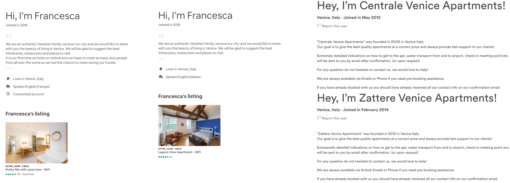

... alla sharing economy
Ocio · Bragora (Venezia) · 20 Settembre 2019
Crescita del fenomeno
Nei 6 Sestieri + Giudecca e Sacca Fisola
ci sono 47.345 posti letto (il 63% del totale del Comune), nonostante ospitino solo 52.473 abitanti (il 20% del totale).
C’è quasi un posto letto per abitante, e 1 posto letto ogni 2.6 abitanti solo in locazioni turistiche, in cui sono offerti 20.135 posti letto.
Il 76% dei posti letto in locazione turistica del Comune si trova qui.
Fonte dati: Elaborazione OCIO su dati del Comune di Venezia Portale GeoIDS e Stime giornaliere Anagrafe Comune di Venezia
2016 - 2018
+18.614 posti letto in due anni.
Quanto dal 2001 al 2016
(+18.830 posti letto in 15 anni)
Squilibrio geografico
Nei 6 Sestieri + Giudecca e Sacca Fisola
In 1 isolato su 4 (23%) ci sono più posti letto per turisti in locazioni turistiche che veneziani residenti.
A S. Marco il picco: qui è solo un isolato su tre ad avere più residenti che posti letto in locazioni turistiche. Questo squilibrio tocca le altre aree in maniera molto meno significativa (Venezia litorale: solo 6% isolati, Terraferma solo il 3%).
Isolato = l’unità territoriale più piccola in cui è suddiviso il territorio, a Venezia spesso copre l’area di una/due calli o poco più
Fonte dati: Elaborazione OCIO su dati del Comune di Venezia Portale GeoIDS e Stime giornaliere Anagrafe Comune di Venezia
Squilibrio nella redistribuzione delle risorse
Negli annunci su Airbnb
Più di 1 host su 5 (22%) gestisce molteplici annunci per un appartamento.
Questo 22% gestisce quasi 2 annunci su 3 (il 62% degli annunci).
Il 5% più “accentratore” gestisce il 33% degli annunci.
sono stati considerati solo gli annunci degli appartamenti interi, per evitare che la stima fosse inflazionata dal fatto che un host può mettere più annunci per la stessa casa, esempio: 1 come appartamento intero da quattro letti, 2 come due stanze singole da due letti,, 4 come quattro posti letto
Fonte dati: Elaborazione OCIO su dati nsideAirbnb del 07 Agosto 2019.
Questo dato è inoltre una probabile sottostima
Non conteggiano i diversi casi in cui un host apre un profilo diverso per ogni annuncio. Alcuni di questi sono evidenti dal fatto che alcune descrizioni di host diversi o descrizioni di appartamenti di host diversi sono pressoché identiche.
